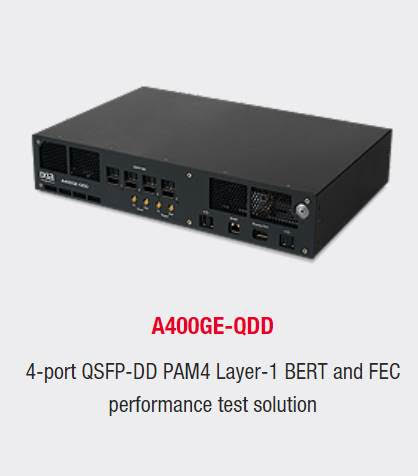

Portfolio Page
-
A400GE-QDD performance test solution
Alongside team Ixia at Keysight Technologies, I helped develop the A400GE-QDD software. My contribution to the project included a new feature to upload and run user's python scripts, implementing new memory-map specifications, and updating various UI's for greater ease of use.
Link -
Reach-Your-Teacher
As a part of Techpoint's S.O.S. challenge, My team and I designed an application to facilitate a safe environment for teachers and grade-school students to communicate easily while attending school virtually during the Covid-19 pandemic. Our team of six developers used an agile workflow to conceptualize a product to fill a much-needed void caused by the pandemic, and brought the idea into a ready-to-implement state through various mock-ups and marketing plans.
Link -
My-Rose-Carillon
During an Android Application Development class, my teammate and I designed and developed to market-readiness a social media application to increase school spirit and community at Rose-Hulman. We looked at our bell-tower that rings over the entirety of campus every quarter-hour and decided that, instead of playing the same tiring jingle every time, the bell tower could use the creativity of the students at Rose. My-Rose-Carrilon was a mobile application that gave students the power to create songs to be played on the Bell tower and vote which one should be played the next time the tower rings.
Link